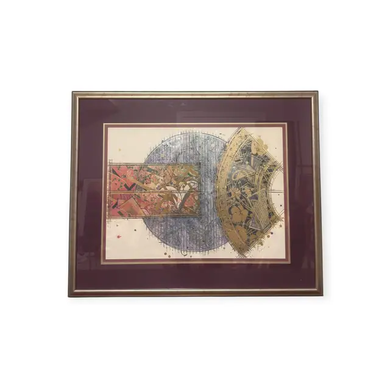
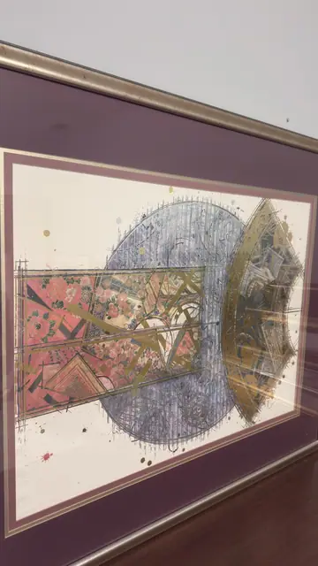
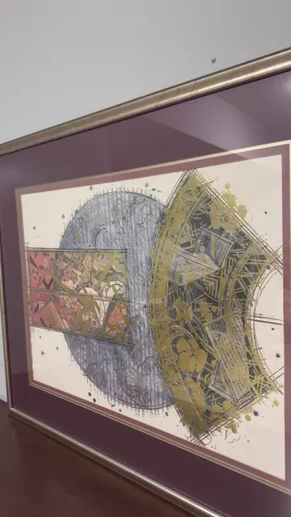
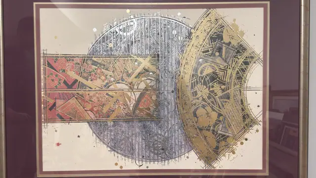

Paintings & Prints
Abstract Fan and Disc with Gold Leaf, Framed
Unknown · 1980s
Price Upon Request




About the Item
A large circle filled with fine vertical pen-hatching in slate blue sits at the centre, crossed from the left by a rectangular band of coral, rose and gold Japanese textile patterning and overlapped at the right by a huge fan-shaped segment printed in metallic gold over dark ink. Splatters and flicks of gold, coral and navy are scattered across the cream ground, and rows of ruled construction lines run through the design. The result is graphic and richly metallic, mixing kimono and obi motifs with hard-edged geometry. Presented under glass in a deep burgundy mat. Medium: serigraph with metallic gold and silver inks on paper. Condition: Sheet appears clean and unfaded; metallic inks are bright. Heavy reflections of the room on the glass in every frame. No signature or edition margin is exposed - the mat may be covering it.
Details
- Creator:
- Unknown
- Creation Year:
- 1980s
- Dimensions:
- Height: 34.5 in (87.63 cm)
Width: 42.0 in (106.68 cm)
outside of frame - Medium:
- serigraph with metallic gold and silver inks on paper
- Period:
- 20Th
- Condition:
- Offered in the condition shown in the photographs.
- Reference Number:
- VO-164
- Documentation:
- no certificate or label photographed